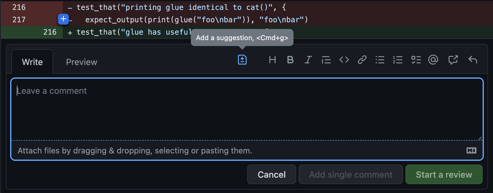
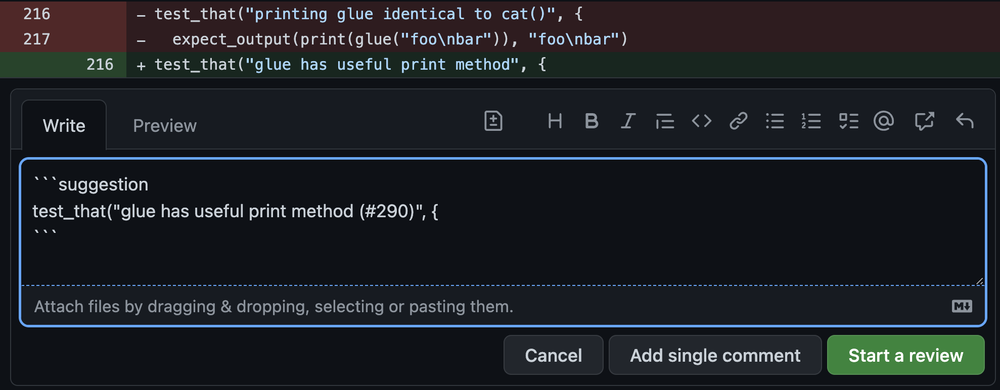

5 Writing review comments
5.1 Courtesy
In general, it is important to be courteous and respectful while also being very clear and helpful to the developer whose code you are reviewing. One way to do this is to be sure that you are always making comments about the code and never making comments about the developer. You don’t always have to follow this practice, but you should definitely use it when saying something that might otherwise be upsetting or contentious. For example:
Bad: “Why did you use threads here when there’s obviously no benefit to be gained from concurrency?”
Good: “The concurrency model here is adding complexity to the system without any actual performance benefit that I can see. Because there’s no performance benefit, it’s best for this code to be single-threaded instead of using multiple threads.”
5.2 Explain why
One thing you’ll notice about the “good” example from above is that it helps the developer understand why you are making your comment. You don’t always need to include this information in your review comments, but sometimes it’s appropriate to give a bit more explanation around your intent, the best practice you’re following (like the design or style guide), or how your suggestion improves code health.
5.3 Giving guidance
In general it is the developer’s responsibility to fix a PR, not the reviewer’s. You are not required to do detailed design of a solution or write code for the developer.
This doesn’t mean the reviewer should be unhelpful, though. In general you should strike an appropriate balance between pointing out problems and providing direct guidance. Pointing out problems and letting the developer make a decision often helps the developer learn, and makes it easier to do code reviews. It also can result in a better solution, because the developer is closer to the code than the reviewer is.
One example of this is to simply point out a section of code that confused you, or which took a long time to understand. This isn’t a direct call to action, but prompts the developer to take another look at the code of that section to see if it can be further simplified or clarified (like with a why code comment).
Another way to demonstrate an issue is to provide the author a reprex that demonstrates that there is still a bug in their PR. The developer can then decide how to resolve it.
However, sometimes direct instructions, suggestions, or even code are more helpful. The primary goal of code review is to get the best PR possible. A secondary goal is improving the skills of developers so that they require less and less review over time.
Remember that people learn from reinforcement of what they are doing well and not just what they could do better. If you see things you like in the PR, comment on those too! Examples: developer cleaned up a messy algorithm, added exemplary test coverage, or you as the reviewer learned something from the PR. Just as with all comments, include why you liked something, further encouraging the developer to continue good practices.
5.4 GitHub suggestions
For very small tweaks, like typos or additions to comments, GitHub provides a feature known as suggestions. As a reviewer, you can add suggestions using the workflow shown below, and the author can accept them directly in the GitHub UI and commit them into the PR (which can then pull locally to get everything up to date if they have more work to do).


As a reviewer, you can add multiple suggestions and the author can batch multiple suggestions into a single commit.
5.5 Label comment severity
Consider labeling the severity of your comments, differentiating required changes from guidelines or suggestions.
Here are some examples:
Nit: This is a minor thing. Technically you should do it, but it won’t hugely impact things.
Optional (or Consider): I think this may be a good idea, but it’s not strictly required.
FYI: I don’t expect you to do this in this PR, but you may find this interesting to think about for the future.
This makes review intent explicit and helps authors prioritize the importance of various comments. It also helps avoid misunderstandings; for example, without comment labels, authors may interpret all comments as mandatory, even if some comments are merely intended to be informational or optional.
5.6 Finishing off an external contribution
Sometimes when we receive external contributions, we decide that rather than leaving comments for the external contributor, it is more efficient for us as the reviewer (and usually package maintainer) to just finish off the PR and merge it for them. This typically happens when we come back to work on a package after letting it lie dormant for a few months, and we find that we have a few PRs from external contributors. Sometimes these PRs can sit for awhile while no one is actively working on the package, and it might not make much sense to leave comments for the PR author weeks after they sent the PR in. Using usethis::pr_fetch() and usethis::pr_push(), you can instead just take over the PR, fix any minor issues, and merge it in. Make sure that if you do this, you also thank the contributor for their contributions!
It is also appropriate to inform a PR author that you’ll finish off a PR if you have already gone through 1-2 rounds of PR review and there are still a few minor edits that need to be made before the PR is ready to be merged.